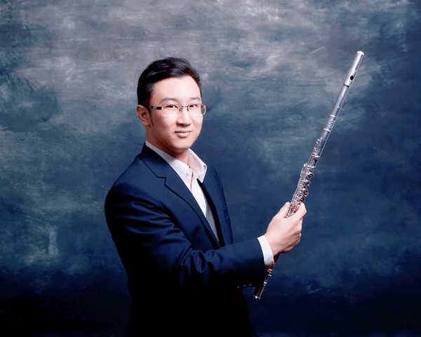

讓聲音有來處，
讓練習有方向。
張家詠 Oliver Cheung · 音樂教學與演奏

從演奏經驗，回到每一堂課
張家詠老師長期從事音樂教育，教授與演奏的樂器包括長笛、竹笛、洞簫及空靈鼓。曾參與學校與機構音樂課程，亦有樂團演出及跨媒介音樂活動經驗。
在音樂進修方面，曾跟隨李詩曼、陳仕斌及余永進進修長笛，並取得長笛演奏文憑、八級樂理及中央音樂學院竹笛演奏文憑等資格。
閱讀張老師的完整經歷把「再練一次」變成清楚的方法
先聽問題在哪裏
聲音不穩，可能與氣流、嘴形、按鍵或孔位有關。分開觀察，才容易知道下一步該處理甚麼。
讓學生做得到
把難段縮成一個音、一個轉換或短短兩拍。任務有清楚範圍，回家練習便能接續課堂。
把技巧放回音樂
基本功改善後，接回作品的節奏與句子。音準、音色與手指協調，最終都要幫助表達。
每種學習狀態，都有值得照顧的地方
兒童入門需要觀察樂器是否合手、專注時間和練習方式；成人學習則要把工作與生活時間一起考慮。已有基礎的學生，可以從反覆遇到的技巧問題或想演奏的作品出發。
考級可以是學習目標之一，聆聽、合奏與閱讀新譜同樣重要。課程方向應隨能力和需要調整，不必讓所有學生走同一條路。
從你現在的程度開始
把想學的樂器、已有經驗及可上課時間告訴張老師，一起討論合適的學習安排。